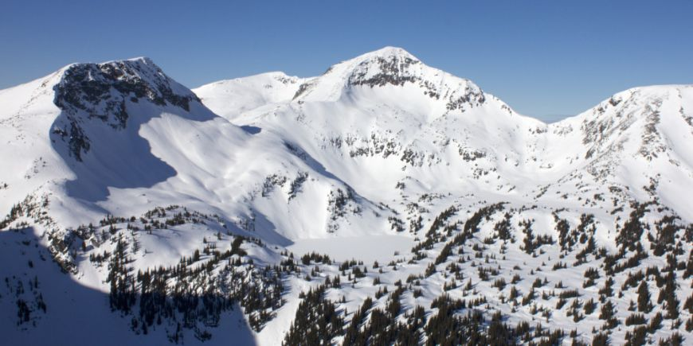
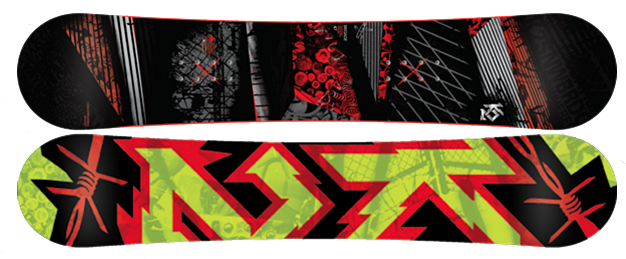

Snowboarding is primarily a winter sport, but there are places you can go to snowboard at other times of the year but it would require a lot of traveling to do this. As you can go to the hemisphere of the world in order to be able to continue snowboarding. Snowboarding is a lot of fun, even if you are doing tricks like the people in the video below.
If you are going to start snowboading you will need some equipment; the snowboard itself, bindings and snowboarding boots. Now these are not the only things you should get, you should also buy a helmet, I can vouche for the purchase of one even if you dont plan on going in to the park (trick area). The reason I suggest a helmet is there can be ice and when you fall you dont want to smack your head down upon it, trust me it really hurts and can end very badly. Also you should have snow pants and a snow jacket as it is the winter and even if you dont fall when you sit to put your bindings on its nice to have insulation from the snow and cold. Their are other items you can get but they are not required and are just nice to have, such as a stomp pad.

Once you are out and trying to learn get comfortable standing on the board at a stand still, once you feel like you got your balance then sit down so that you can learn how to sit down as it is something you will want to be able to do easily. Know you can try some easy hills you will want to learn how to stop you dont need to get going fast to practice this, what you want to do is get the board sideways to the direction you are going with your weight back so that you dont dig in your front edge and face plant.